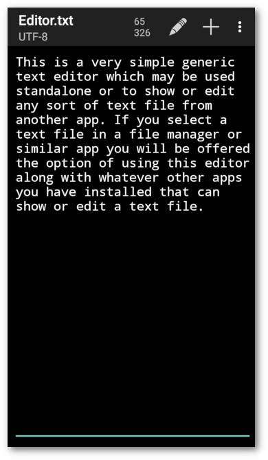
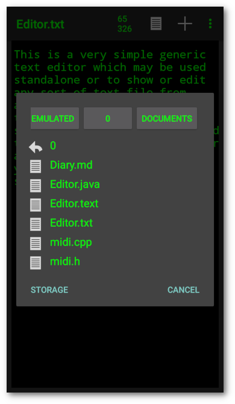
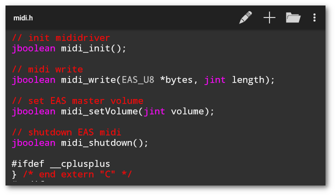
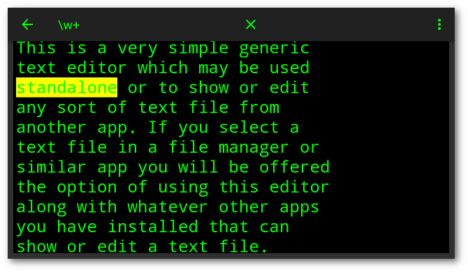
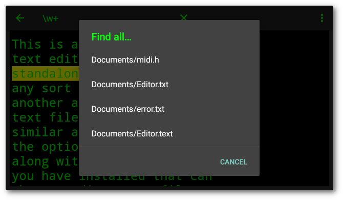
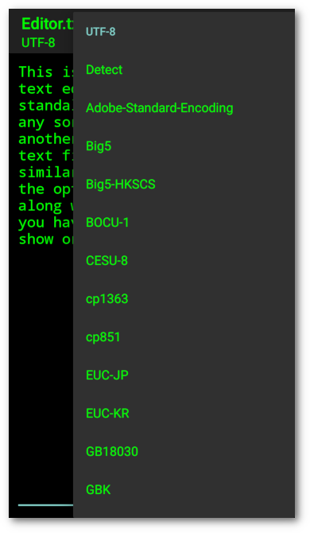
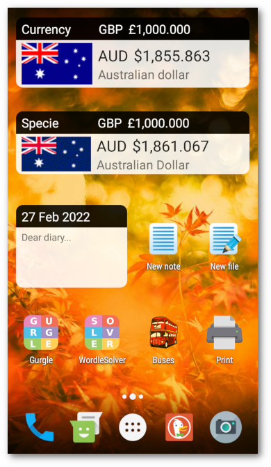
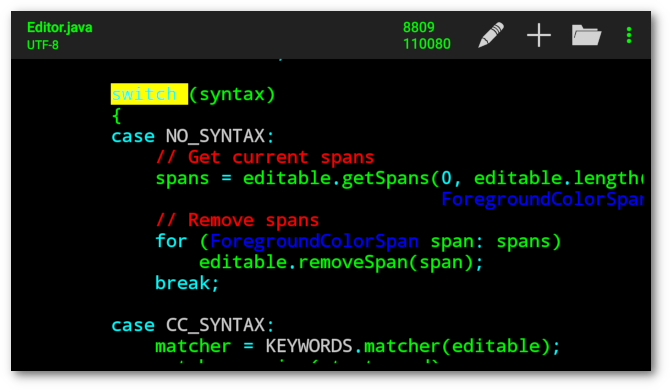

Introduction
Android simple generic text editor.
 
This is a very simple generic text editor which may be used standalone or to show or edit any sort of text file from another app. If you select a text file in a file manager or similar app you will be offered the option of using this editor along with whatever other apps you have installed that can show or edit a text file. Files will initially be opened read only, long touch on the display or touch the edit item in the toolbar to enable editing.
Features
- File chooser
- Default file
- View markdown in browser or html viewer
- Regular expression text search
- Character set detection and selection
- Optional syntax highlighting
- Open recent files from menu
- Optionally view files
- Optional auto save
- Optional Word wrap
- New file shortcut
- Light/Dark/Black/Retro themes
- Small/Medium/Large font size
- Monospace/Proportional font faces
Using

Toolbar
There are five toolbar items which may appear:
- Edit – Edit the current read only file
- View – View the current file read only
- Save – Save the current file if modified
- New – Start a new empty file
- Open – Open a text file using a chooser
And on the menu:
- Open recent – Pop up a list of recent files
- Clear list – Clear list of recent files
- Save as – Save the current file with a new name
- Search – Interactive search of text using a regular expression
- Charset – Select character set, shows current set
- View markdown – View markdown in browser or html viewer
- View files – Open files read only for viewing
- Auto save – Save the current file on app pause
- Word wrap – Limit text width to screen width and word wrap
- Suggestions – Text input and spelling suggestions
- Highlight syntax – Highlight programming language syntax
- Theme – Choose theme
- Light
- Dark
- Black
- Retro
- Text size – Choose text size
- Small
- Medium
- Large
- Typeface – Choose typeface
- Monospace
- Proportional
- About – Show version, copyright and licence
Open
Choose a file to open from the chooser dialog that pops up. The file will initially be read-only. Touch the Edit toolbar item to enable editing.
The chooser shows a scrollable row of folder buttons and list of files with icons. Files which appear to be media files, or are too large will be disabled and not selectable. Touch a folder button or a folder to change folder, or a file to open a file. Hidden files beginning with a ‘.’ will not appear.
The parent folder, if it exists, will appear first in the list. Touch
that folder to move up the directory tree. If a folder is not
accessible, the chooser will show the parent folder, if it exists, and
the external storage folder (/storage/emulated/0).
Use the Storage button to open files using the android file manager. This should ensure that files on removeable SD cards can be saved using the Save button. The file manager may refuse to open some types of text files not recognised by android.
Open Recent
Choose a file from the list that pops up. As above the file will initially be read only. The last entry, Clear list, will clear the list.
Save As
Enter a new file name in the dialog that pops up. Absolute names
starting with a slash ‘/’ will be saved in that exact path. Names
without a starting slash will be saved relative to the main public
folder, /sdcard/, or /storage/emulated/0/. Touch the Storage
button to use the android file manager to save the file.
Search

Enter search text in the field that pops up in the toolbar. The first matching item will be highlighted. Use the search button in the keyboard for find next. The exact regular expression syntax used is in the android documentation for Pattern.
Findall

You may find all recent files that contain the current search text. This menu item will only appear while the search widget is active. A dialog will pop up with a list of matching files. Touch an entry to open that file. You may repeat this or refine the search text to find the desired file.
View Markdown
You will be prompted to choose a viewer for an html file containing the encoded markdown from the current open file. If the text contains no markdown the result will be the same text.
Character set

The current character set is displayed under the current file name. The character set is detected when a new file is read. It may be changed by selecting the Charset item in the menu, which shows the current character set.
Default
The default character set is set to UTF-8 on selecting New from the toolbar. It may be changed in the menu. Android defaults to UTF-8, don’t use anything else unless you are sure what you are doing.
Detection
The current character set is detected on reading a file by the detection code from International Components for Unicode. If there are no accented characters or symbols in the text to give the detection algorithm something to work on it may not get it right.
Saving
Files will be saved using the current character set. To change it, use the Charset item in the menu, which shows the current set.
Caution – If you add accented characters or symbols to the text, make sure to check the current character set before you save it.
Use mode line
The character set may be set to UTF-8 by using a mode line in the text.
# ed: cs:u
See Mode Line
Regular Expressions
Explaining regular expressions used in the text search is beyond
the scope of these docs. There is at least one book (of many)
devoted to the subject. Use (?i) for case insensitive search, .
matches any character once, .? matches any character once or not at
all, .+ matches any character one or more times, .* matches any
character any times or not at all. Use .+? or .*? for reluctant
versions. Use \b for a word boundary, \d for a digit, \s for a
white space character, \w for a word character, so \w+ matches
words. Use [abc] to match a set of characters, or [a-z] for a
range, so \w*[aeiou]+\w* should match any word with at least one
vowel in it.
Shortcut

You may create a New file shortcut in the launcher which will open a new file in Editor.
Highlight Syntax

If the current open file is a C, C++, Objective C, Go, Java, Javascript, Python, Shell script, Swift, CSS, HTML or Markdown file, the keywords, classes comments, strings, etc will be highlighted.
Selection
The type of highlighting is selected by file extension. Files with
.c, .cc, .c++, .cxx, .m, .h, .go, .js, .java, .py,
.sh, .swift extensions will be highlighted with ‘C’ style
highlighting. Files with .htm, .html extensions will be
highlighted as HTML. Files with .cs, .css extensions will be
highlighted as CSS. Files with .md extensions will be highlighted as
markdown.
Parsing
The algorithm makes no attempt at parsing. The text is scanned for relevent keywords, classes, constants, strings and comments and highlighted accordingly. Therefore it will not be exactly correct, but good enough for a simple text editor. See Source Code Syntax Highlighting.
C type
Keywords and types are matched from lists of C/C++/Objective
C/Go/Java/Javascript/Python/Shell/Swift keywords and types. Classes
are capitalised words. Constants are all caps words. Strings are in
double quotes. Single quotes are ignored because apostrophes break the
algorithm. Both /* */ and // C style comments and # Shell
script style comments are recognised.
HTML
HTML keywords are matched from a list. Double quoted arguments are
highlighted. As above, single quotes are ignored. HTML comments <!-- --> are recognised.
CSS
CSS style names are matched from a list. Double quoted arguments are highlighted. As above, single quotes are ignored. C style comments are recognised.
Markdown
Markdown headers, links, emphasis and code will be highlighted.
Default
Files with unrecognised extensions which are not plain text files will be highlighted with default highlighting, similar to C type highlighting. Comments will not be highlighted as there is little consistency with comment delimiters outside C type languages.
Limitations
Because scanning and highlighting a large file can be quite slow, making the app unresponsive, only the text currently in view is scanned and highlighted. Therefore as the text is edited or scrolled, the new region in view will be scanned and highlighted after a short delay to allow for user typing without the highlighting running constantly.
Scrolling
After the text is highlighted, the android view system will re-layout the views whether they need it or not. That causes the current cursor position to be scrolled back into view, which can be extremely annoying. So the cursor is moved if necessary to keep it within the visible region.
Horizontal scrolling
On devices running android versions less than Marshmallow M (6), horizontal scrolling will scroll back again. Make the text size smaller or rotate the device to avoid this. Or turn the highlighting off.
Mode Line
If a line of text is found within the first or last two or three lines
of the file which matches the mode line pattern, the mode of the
editor will be changed after the file is loaded. The pattern is one
or more text or punctuation characters, white space, the text ed:
followed by one or more option patterns separated by white space.
# ed: [[no]vw] [[no]ww] [[no]sg] [[no]hs] [cs:u] [th:l|d|b|r] [ts:l|m|s] [tf:m|p]
The initial text or punctuation characters are intended to be used to hide the mode line from compilers and interpreters by commenting it out.
The option patterns are:
- [no]vw – View files read only
- [no]ww – Word wrap
- [no]sg – Suggestions
- [no]hs – Syntax highlighting
- cs:u – Character set – UTF-8
- th:l|d|b|r – Theme – light, dark, black or retro
- ts:l|m|s – Text size – large, medium or small
- tf:m|p – Typeface – monospace or proportional
The mode line is read after the file is loaded and will change immediately, except in Android 6, Marshmallow due to an obscure bug. Rotate the device to change mode.
Word Count
The file word count and character count are shown in the toolbar. Due to the algorithm used, the result may differ from that produced by other utilities.
Extended Selection
If the file being edited is not a plain text file, selections created by double tapping or long touching on the text will be extended to enclosing delimiters (brackets, quotes) on the same text line.
Text Size
Text size may be changed from the menu or by pinch or expand gestures on the text or by doubletap and swipe. The response to gestures on large files may be slow or delayed.
Unsaved File
If you touch the new, back or open button, and the current file has been modified, you will be prompted whether you want to save it, else the editor will just exit or open a file chooser. The current file may be saved on app pause using the menu option. The scroll position and name will be remembered for the last 10 files opened.
Changed File
If a file has changed in storage while it was open in the editor, if you attempt to save it, or the app is resumed, you will be prompted whether to overwrite or reload the file.
Default File
If there is no open file any text entered will by default be saved in
Documents/Editor.txt. This file will be loaded on start if it
exists. Use the Save as menu item to save it elsewhere.
Keyboard Shortcuts
When using an external keyboard, some keyboard shortcuts are implemented:
- Ctrl+E – Edit mode
- Ctrl+N – New file
- Ctrl+O – Open file
- Ctrl+S – Save file
- Ctrl+Shift+S – Save as
- Ctrl+V – View mode